Bezpečnost na prvním místě
Zábradlí chrání ze všech stran a každé kolečko má brzdu. Lešení odpovídá evropské normě EN 1004 a má certifikát ověřené bezpečnosti GS od TÜV Nord.
Systém od evropského výrobce Scafom-Rux
BezpečnéSnadné na montážUniverzální
Malujete fasádu, opravujete okapy nebo měníte světla v hale? Mobilo je hliníkové lešení na kolečkách, které složíte z lehkých dílů bez nářadí. Zábradlí, brzdy a ověřená konstrukce vám dají jistotu i ve výšce.
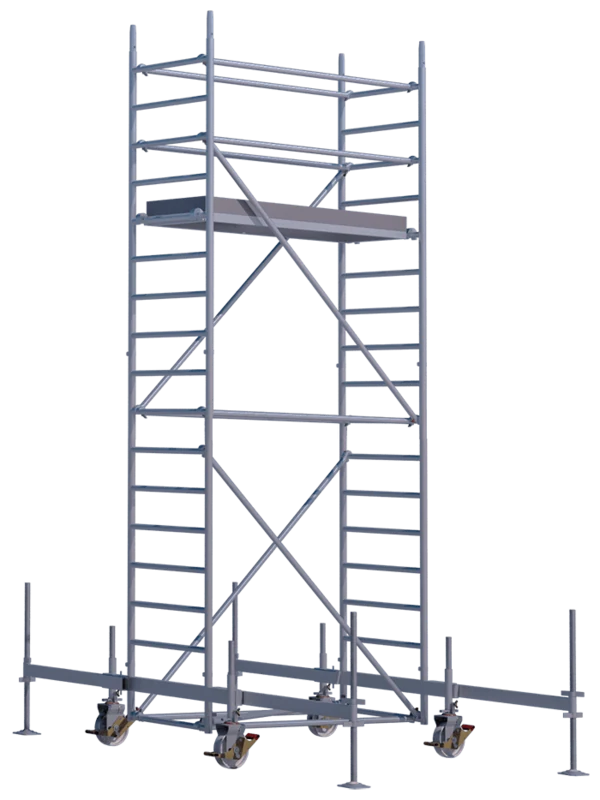
Proč Mobilo
Mobilo je stavebnice z hliníkových dílů. Jednoduše se skládá, pevně stojí a po práci zabere málo místa.
Zábradlí chrání ze všech stran a každé kolečko má brzdu. Lešení odpovídá evropské normě EN 1004 a má certifikát ověřené bezpečnosti GS od TÜV Nord.
Zábradlí a diagonály zacvaknete, žebříkové rámy zasunete do sebe. Nepotřebujete klíče ani šroubováky. Na stavbu se ale vždy pusťte ve dvou.
Dvě šířky, tři délky a pracovní výška od 3,5 do 14 metrů. Hodí se dovnitř i ven. Většinu dílů použijete pro obě šířky.
Hlavní díly jsou z hliníku, takže se s nimi dobře manipuluje. Komponenty jsou navržené pro snadnou přepravu a úsporné skladování.
Vyberte si šířku podle toho, kolik místa máte a kolik prostoru na práci potřebujete.
Úzká varianta – flexibilní využití
Hodí se: do užších prostor a všude tam, kde je méně místa.
Široká varianta – více pracovní plochy
Hodí se: na delší práce na jednom místě, kde potřebujete víc prostoru.
Z čeho se Mobilo skládá
Mobilo je stavebnice. Každý díl má svůj úkol a většina dílů se hodí do obou šířek. Podívejte se, co v ní najdete, a vyberte si podle kategorie.
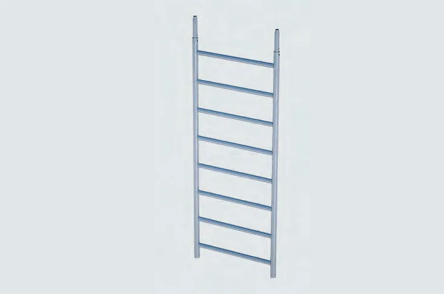
RámySvislý nosný díl, který je zároveň žebříkem. Rámy nasazujete na sebe a zajistíte kolíkem. Příčky mají rýhovaný protiskluzový povrch.
Kat. č. 02458 (800) · 02497 (1400)
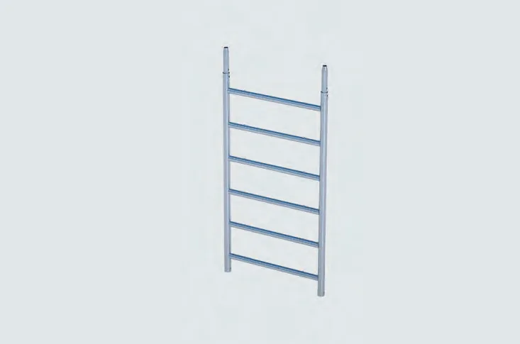
RámyStřední rám. Kombinací různě vysokých rámů si nastavíte přesně takovou výšku, jakou potřebujete.
Kat. č. 02612 (800) · 02499 (1400)
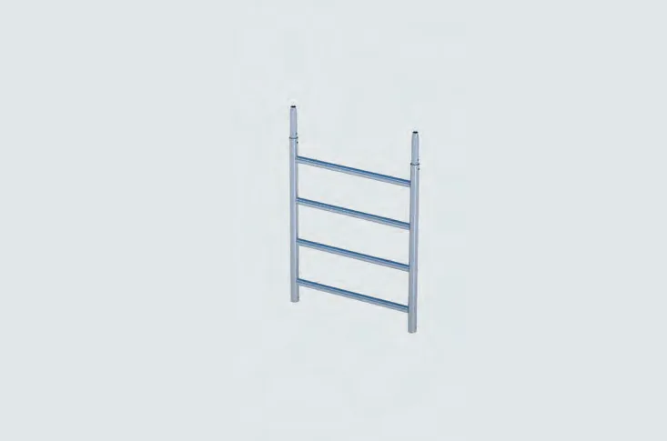
RámyNejkratší rám. Přidá poslední kousek výšky nebo slouží jako horní zakončení sestavy.
Kat. č. 02459 (800) · 02498 (1400)
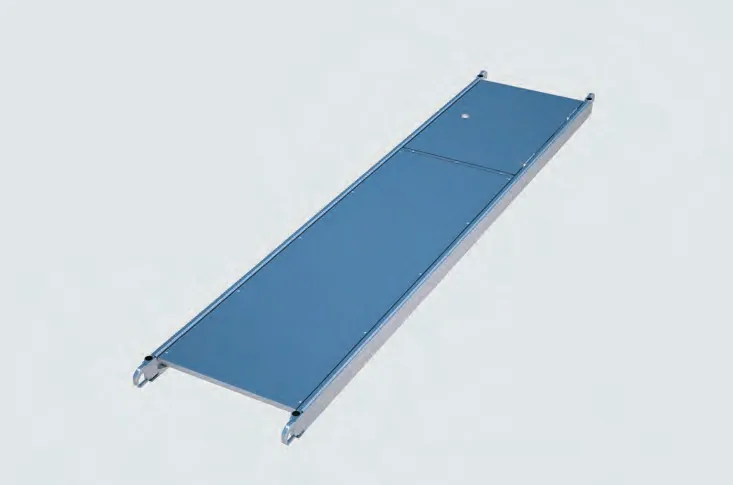
PlošinyHliníkový rám s vodovzdornou 9vrstvou překližkou. Poklopem prolezete na vyšší plošinu, aniž byste museli lešení opustit. Pojistka proti nadzvednutí je součástí.
Kat. č. 02613 · 02447 · 02546
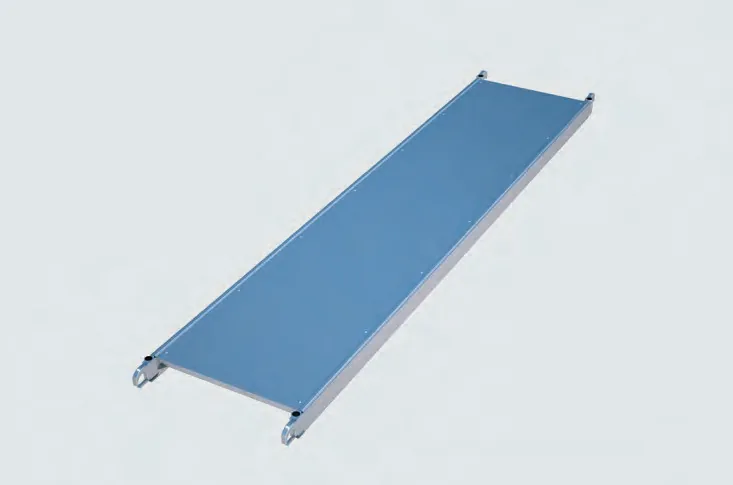
PlošinyDruhá polovina podlahy u široké varianty Mobilo 1400. Spolu s plošinou s poklopem vytvoří 110 cm prostoru pro stání.
Kat. č. 02543
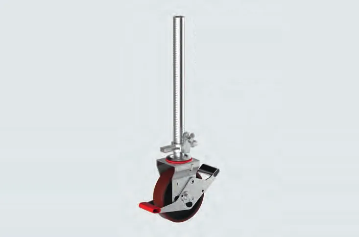
KolečkaVýškově nastavitelné kolo s brzdou. Nylonový povrch šetří podlahu, proto se hodí i na citlivé povrchy v domácnosti.
Kat. č. 02448
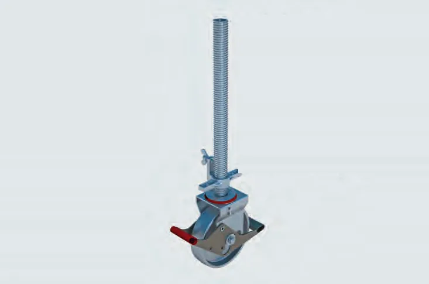
KolečkaSilnější kolo do interiéru i exteriéru, odpovídá normě EN 1004. Brzdu uvolníte nožní pákou, výškou kola lešení srovnáte.
Kat. č. 05507
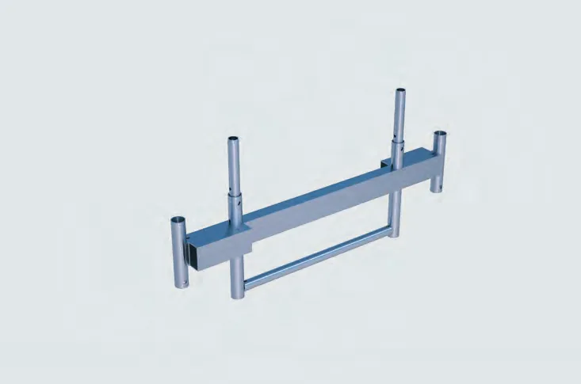
PodvozekPozinkovaný ocelový nosník, který rozšiřuje základnu lešení pro vyšší stabilitu. Kolečka se přidávají zvlášť.
Kat. č. 04975
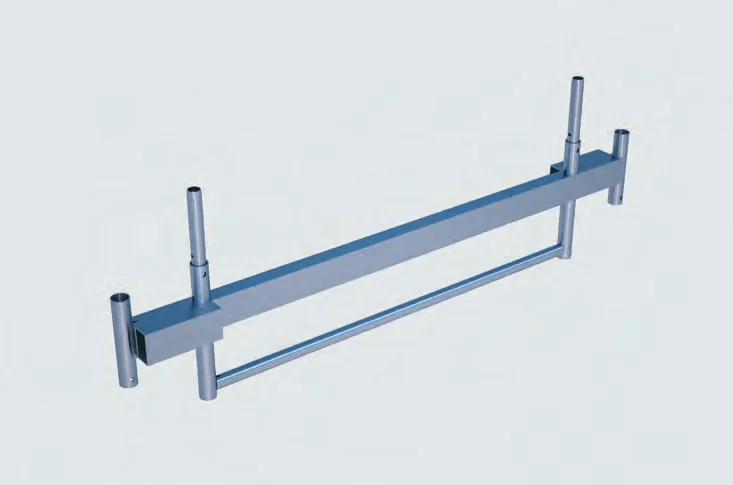
PodvozekTotéž pro širší lešení. Pozinkovaná ocel, pevný základ pro vyšší sestavy.
Kat. č. 05307
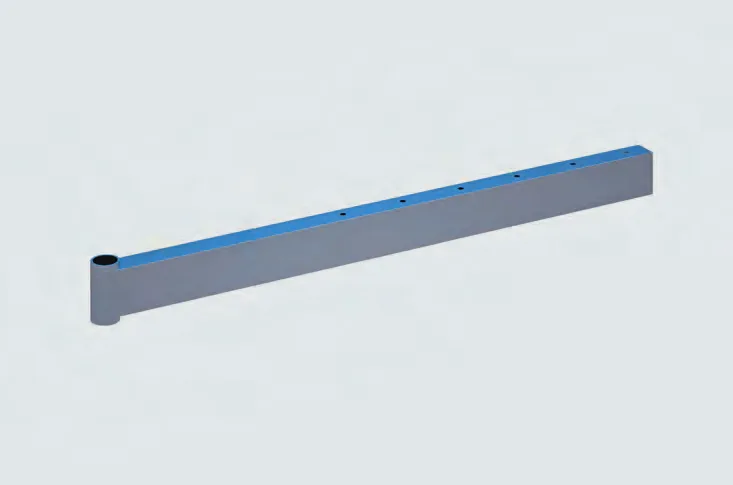
PodvozekZasune se do jízdního nosníku a vysune na potřebnou délku. Širší opora znamená vyšší stabilitu. Při plně vysunutých ramenech se přitěžovací závaží nepoužívají.
Kat. č. 02562
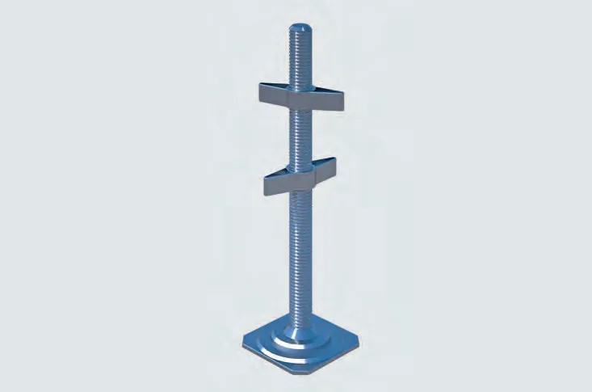
PodvozekŠroub na konci teleskopického ramena. Vytočíte ho tak, aby rameno pevně stálo na zemi bez vůle. Dodává se se dvěma křídlovými maticemi.
Kat. č. 02564
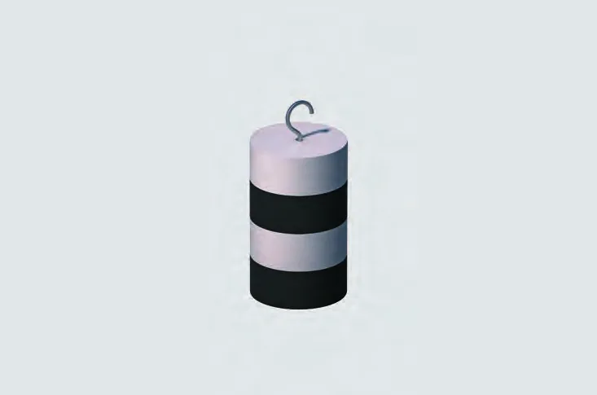
PodvozekDodává lešení stabilitu, když nepoužíváte teleskopická ramena. Počet závaží určuje výška lešení a to, zda pracujete uvnitř, nebo venku.
Kat. č. 02555
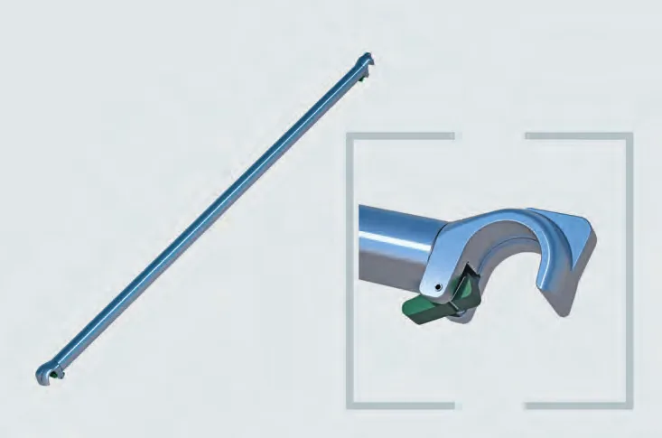
ZábradlíPevné boční zábradlí, které prostě zacvaknete. Poznáte ho podle zeleného značení.
Kat. č. 02616 · 02617 · 02549
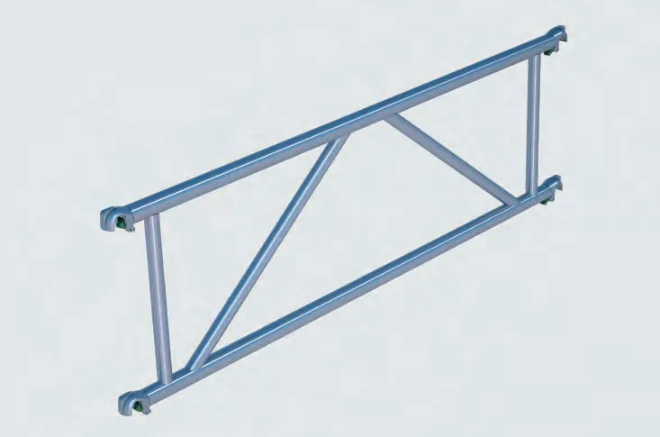
ZábradlíZábradlí v podobě pevného rámu s mezipolem. Stabilní boční ochrana pro práci na plošině.
Kat. č. 02614 · 02600 · 02594
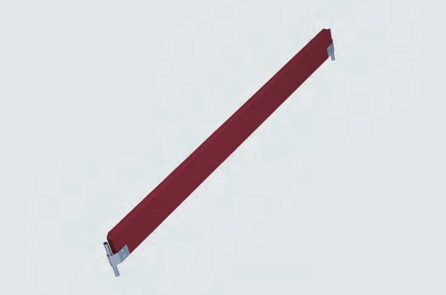
ZábranyDřevěná lišta na delší straně plošiny. Zabrání pádu nářadí nebo materiálu z lešení. Je červeně impregnovaná.
Kat. č. 02593 · 02604 · 02592
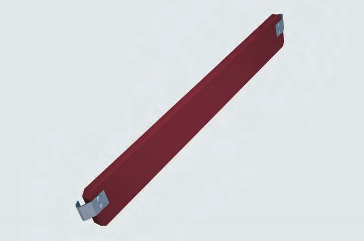
ZábranyTotéž pro kratší (čelní) stranu plošiny. Uzavře podlahu ze všech čtyř stran.
Kat. č. 02462 (800) · 02501 (1400)
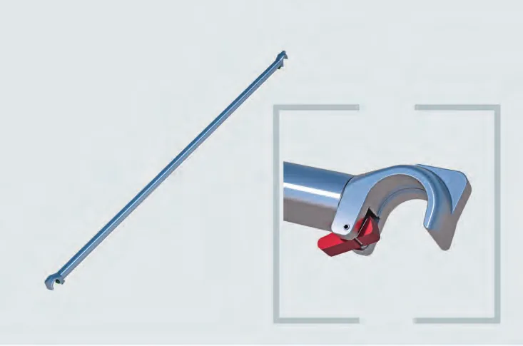
SpojovacíZtužuje konstrukci, aby se nekývala. Zacvaknete ji bez nářadí. Poznáte ji podle červeného značení.
Kat. č. 02441 · 02440 · 02548
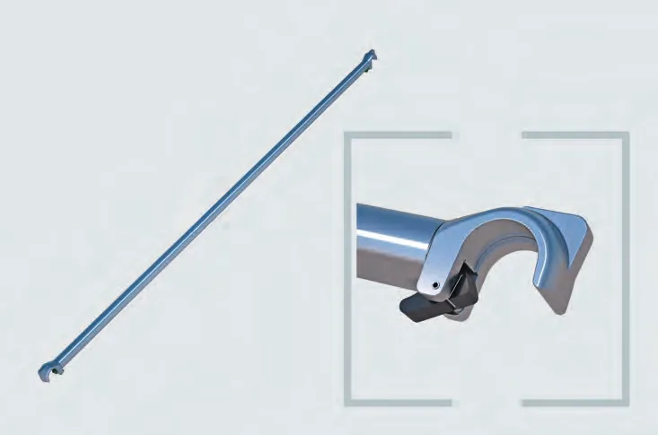
SpojovacíZpevňuje spodní část lešení ve vodorovné rovině. Najdete ji podle černého značení.
Kat. č. 02443 · 02442 · 02457 · 02496
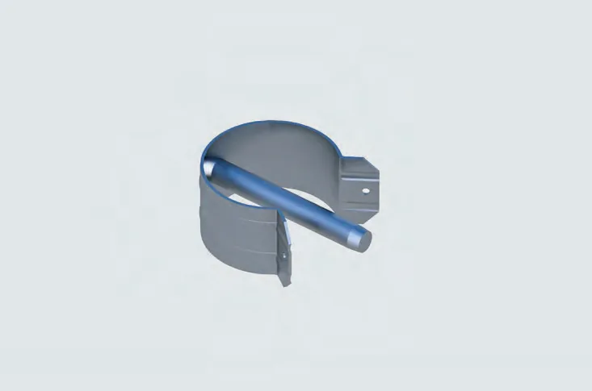
SpojovacíMalý, ale důležitý: zajistí žebříkový rám proti rozpojení. Při převozu ho zasunete do zvláštního otvoru v rámu, aby se neztratil.
Kat. č. 02560
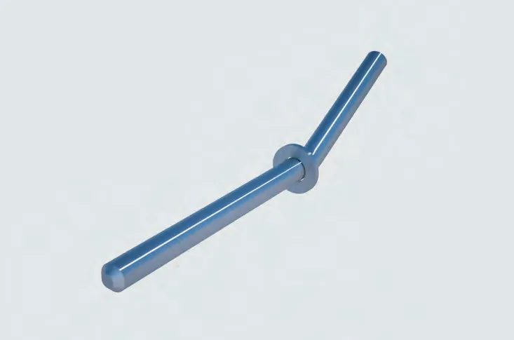
SpojovacíPřipevní teleskopické rameno k jízdnímu nosníku na zvolené délce vysunutí.
Kat. č. 02558
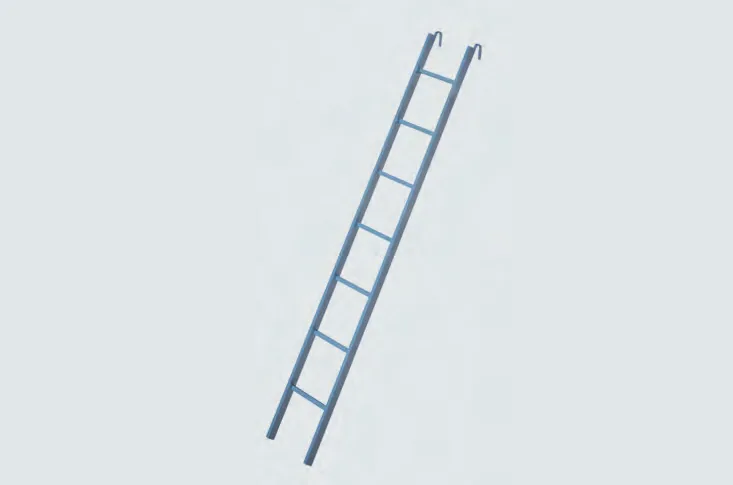
PříslušenstvíPomůcka při montáži, případně i pro výstup na hotové lešení. Zavěsí se do příček rámu.
Kat. č. 02565 · 02566 · 02567
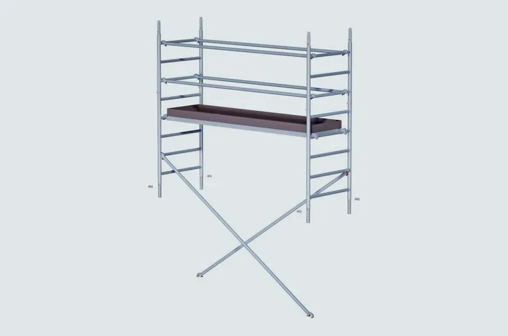
PříslušenstvíHotová sada dílů pro rozšíření základní sestavy. Existují varianty pro Mobilo 800, Mobilo 1400 i pro použití v interiéru.
Podrobnosti ve zdrojích na konci stránky
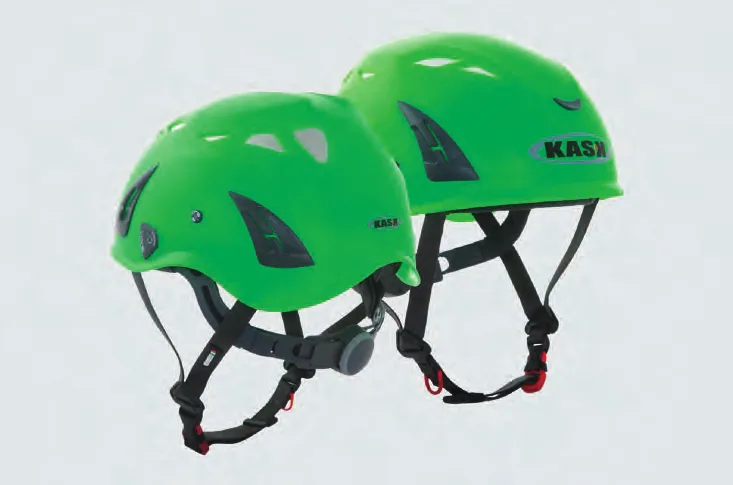
PříslušenstvíLehká přilba, kterou při práci ve výšce oceníte. Splňuje normu EN 397, má větrací otvory a nastavitelný podbradní pásek.
Kat. č. 07133 a další barvy
Rozměry a hmotnosti jsou orientační a pocházejí z katalogu výrobce. Katalogové číslo (kat. č.) vám pomůže najít díl v PDF katalogu níže. Fotografie dílů pocházejí z katalogu výrobce Scafom-Rux.
Jak se Mobilo skládá
Základní princip je jednoduchý. Níže najdete stručný postup. Přesný návod a tabulky pro svoji výšku vždy dohledejte v katalogu výrobce.
Nasaďte čtyři kolečka (u vyšších sestav jízdní nosníky). Zacvakněte spodní zábradlí a vodorovnou diagonálu. Všechna kolečka zabrzděte.
Nasuňte první dva žebříkové rámy a zajistěte je kolíky. Zacvakněte svislé diagonály a lešení srovnejte.
Zavěste plošinu na čtvrtou příčku od spodu (asi 1 m) a pojistěte ji proti nadzvednutí. Zábradlí máte stále 1 m nad sebou.
Přidávejte další rámy, diagonály a zábradlí. Při šplhání musíte mít vždy zábradlí aspoň 1 m nad sebou.
Doplňte patní lišty a zábradlí 0,5 m nad podlahou. Zkontrolujte, že všechny díly zaklaply, lešení stojí rovně a kolečka jsou zabrzděná.
Zacvakávací čelisti dílů mají barevné značení, takže se nespletete.
Výběr nejdůležitějších pokynů výrobce.
Toto je jen stručný výběr. Úplná pravidla najdete v návodu výrobce (katalog, str. 28–29). Výrobce také uvádí, že lešení má před použitím zkontrolovat způsobilá osoba.
Technické specifikace
Všechna čísla pocházejí z katalogu výrobce a platí pro Mobilo 800 i 1400, pokud není uvedeno jinak.
Pracovní výška
až 14 m
Uvnitř budov od 3,5 do 14 m. Venku od 3,5 do 10 m. Pracovní výška je zhruba o 2 m víc než výška podlahy, na které stojíte.
Nosnost plošiny
200 kg/m²
Skupina lešení 3 podle normy EN 1004.
Šířka lešení
0,8 / 1,4 m
Dvě varianty: úzké Mobilo 800 a široké Mobilo 1400 (rozměr bez jízdních nosníků).
Délka lešení
1,8 / 2,1 / 2,6 m
Mobilo 800 se skládá ve třech délkách. Mobilo 1400 v délce 2,6 m.
Materiál
Hliník
Hlavní díly jsou hliníkové. Podvozek (jízdní nosníky a teleskopická ramena) je z pozinkované oceli.
Normy a certifikace
EN 1004
Klasifikace 3 8/12 XXCD. Certifikát ověřené bezpečnosti GS od TÜV Nord.
Hmotnost typické sestavy
ca. 75 kg
Mobilo 800, nejnižší sestava (pracovní výška 3,5 m, délka 1,8 m). Mobilo 1400 v délce 2,6 m: ca. 115 kg.
Prostor pro stání
55 / 110 cm
Šířka podlahy: jedna plošina u Mobilo 800, dvě plošiny vedle sebe u Mobilo 1400.
| Parametr | Mobilo 800 | Mobilo 1400 |
|---|---|---|
| Šířka lešení | 0,8 m | 1,4 m |
| Délka lešení | 1,8 / 2,1 / 2,6 m | 2,6 m |
| Podlaha | jedna plošina, 55 cm pro stání | dvě plošiny, 110 cm pro stání |
| Pracovní výška uvnitř budov | 3,5 až 14 m | 3,5 až 14 m |
| Pracovní výška venku | 3,5 až 10 m | 3,5 až 10 m |
| Nosnost | 200 kg/m² (skupina 3) | 200 kg/m² (skupina 3) |
| Klasifikace | EN 1004 – 3 8/12 XXCD | EN 1004 – 3 8/12 XXCD |
| Jízdní nosníky v sestavě od výšky | 6,6 m (nosník 1,2 m) | 9,6 m (nosník 1,8 m) |
| Žebříkový rám 2,0 m | asi 9,6 kg | asi 14,4 kg |
| Nejnižší sestava (3,5 m) | ca. 75 kg (délka 1,8 m) | ca. 115 kg (délka 2,6 m) |
Vyzkoušejte si
Posuňte jezdec a uvidíte, kolik dílů budete potřebovat a kolik lešení váží. Je to orientační přehled podle kusovníků výrobce.
Hmotnost je součet hmotností dílů z katalogu bez přitěžovacích závaží. Pro skutečnou montáž vždy použijte návod výrobce.
Galerie
Podívejte se, jak může lešení Mobilo vypadat a kde se vám bude hodit. Kliknutím obrázek zvětšíte.
Fotografie a vizualizace pocházejí z katalogu a webu výrobce Scafom-Rux. Scény v části „Kde se Mobilo hodí“ jsou vlastní ilustrace, protože zdroje neobsahují fotografie z domácího použití.
Ke stažení
V katalogu najdete všechny podrobnosti, které jsme na webu zjednodušili. Je to ověřený zdroj údajů přímo od výrobce.
Časté dotazy
Jednotlivé díly jsou lehké a skládají se bez nářadí. Výrobce ale uvádí, že montáž a demontáž mají provádět nejméně dvě osoby, které se seznámily s návodem. U vyšších sestav proto počítejte s pomocníkem a pečlivě sledujte pokyny.
Pracovní výška je 3,5 až 14 m uvnitř budov a 3,5 až 10 m venku. Pracovní výška je výška, kam dosáhnete rukama. Je zhruba o 2 m větší než výška podlahy, na které stojíte.
Lešení se stabilizuje závažími nebo teleskopickými rameny na jízdních nosnících. Při plně vysunutých ramenech se závaží nepoužívají. Přesný počet závaží najdete v tabulkách v katalogu podle výšky a podle toho, zda pracujete uvnitř, nebo venku.
Ne. Při přejíždění nesmí být na lešení žádní lidé ani materiál. Jezděte pomalu a po zastavení vždy znovu zabrzděte všechna kolečka a zkontrolujte, že lešení stojí rovně.
Ano. Venku je ale nižší nejvyšší pracovní výška (10 m) a při silném větru musíte lešení opustit. Kolečka 10 kN jsou určena pro venkovní i vnitřní použití, lehčí kolečka 5 kN jsou vhodná pro citlivé podlahy.
Hlavní díly jsou z hliníku, takže jsou lehké. Podvozek (jízdní nosníky a teleskopická ramena) je z pozinkované oceli. Plošiny mají hliníkový rám a vodovzdornou překližku.